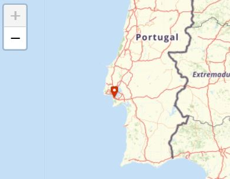
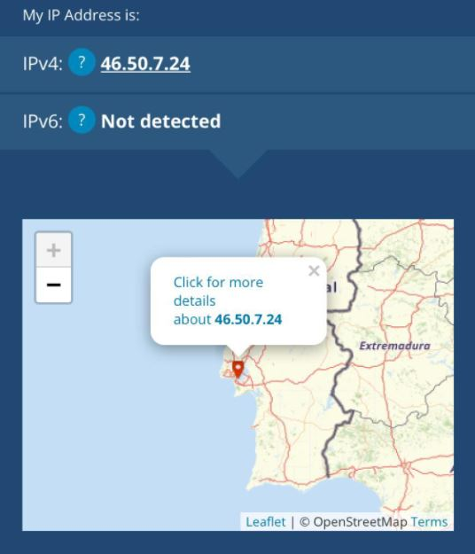
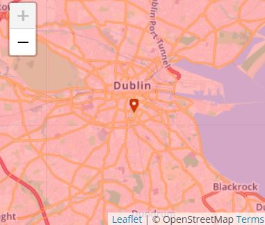
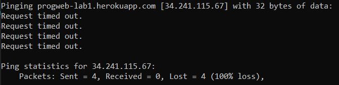
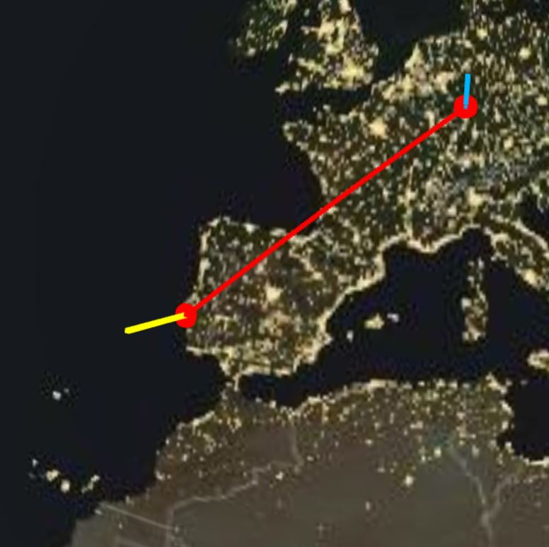
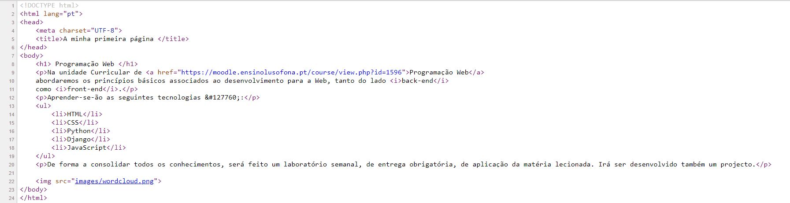
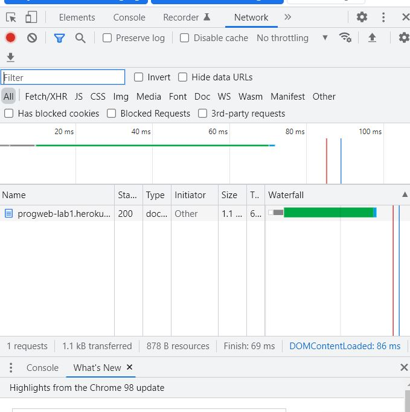

Programação Web | A Internet e a Web
A Internet e a Web
Conhecer a Internet
Endereços IP:
- IP do PC: 85.138.228.14

- IP do telemóvel: 46.50.7.24

- IP do endereço do servidor Web onde está alojada a página no Heroku: 34.241.115.67
Localização da app no mapa:

Percurso
Pacotes IP:
- Depois de fazer o ping via command line podemos ver a seguinte info, obtida pelo teste executado:

Podemos verificar que foram enviados 4 pacotes, sendo que obtivemos uma percentagem de 100% de loss
(perda) uma vez que nenhum deles foi recebido. O motivo foi por time out.
- Depois de usar a tool GeoTraceroute, obtive a seguinte informação:
- Origem: Portugal Pior velho | Distância: 0kms
- Portugal Lisboa | Distância: 8km
- Destino: DE - Frankfurt | Distância: 1879 km
- Oirgem destino, visualizado através de satélite, pela plataforma GeoTraceroute:

HTTP
código fonte:

Inspect
browser developer tool
- barra network:

Nitidamente, temos a percepção da arquitetura cliente-servidor. Mostra o tempo em ms da duração desde do
pedido até há recepção do mesmo, no cliente (meu portátil neste caso concreto). Também, após várias
tentativas, percebemos que o tempo muda constantemente a cada pedido, o que é normal.
- ficheiros:
- tipo de ficheiros, timings de espera e de descargarespectivamente em seguida:
- preview, headers, timing respectivamente em seguida:
- o Preview mostra a página criada, sem a imagem colocada no fim, uma vez que esta está alocada do lado do
cliente.
- Mostra-nos o get (HTTP-protócolo)
- É o server timing, isto é, tempo de resposta do servidor a um pedido do cliente.